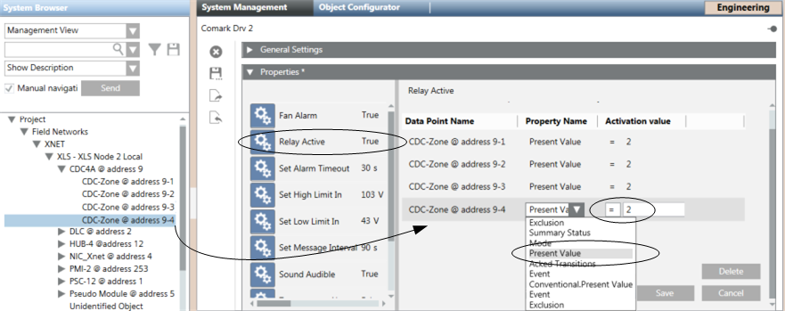

Configuring Fire Event Reporting via Comark Relay Output
Scenario
You want to use the relay output of the Comark monitor card to report an event on the fire system, for example an alarm or a trouble condition. You can associate the Relay Active property to one or more data points whose active condition can trigger the output activation.

NOTE:
When selecting a data point to associate with the relay output for trouble notifications, make sure to indicate the objects of your system whose trouble condition is always available. On XNET fire control panels, select all the devices under the line objects.
Important: The association of higher-level objects in the structure hierarchy can reduce the number of associations, but may fail to properly report the trouble conditions if the objects do not report the trouble condition or if the alarm condition can override the trouble.
- System Manager is in Engineering mode.
- A Comark driver already exists. You can create it using New
 .
.
- Depending on where the Comark driver is configured, select one of the following:
- Project > Management System > Servers > Main Server > Drivers > [Comark driver]
- Project > Management System > FEPs > [FEP] > [drivers folder] > [Comark driver]
- In the System Management tab, select the Relay Active property.
- The (initially empty) association list displays on the right. The list is organized as a table with three columns:
- Data Point Name: Name of the associated data point.
- Property Name: Name of the considered property of the data point.
- Activation Value: Value of the property expressing the trouble condition (see the table following this procedure). - In System Browser, select the Manual Navigation check box.
- In System Browser, locate and select the fire system object, whose abnormal condition you want to associate.
- Drag the object into the Relay Active association list.
- A new line displays in the association list.
- Click the Property Name column of the new line.
- In the drop-down list, select the Present Value property.
- Click the Activation value column of the new line.
- Enter a value (for example 2 = Alarm or 3 = Fault, see the table below) as the activation value.
- Repeat the object association steps for all the data points you want to associate.
- Click Save.
- The data point association is configured: the relay output state will reflect the trouble condition (OR-state) of all associated objects.

Present Value Property | |
Value | Description |
0 | Quiet |
2 | Alarm |
3 | Fault |
22 | Supervisory |
268 | Trouble Bypass (Exclusion) |